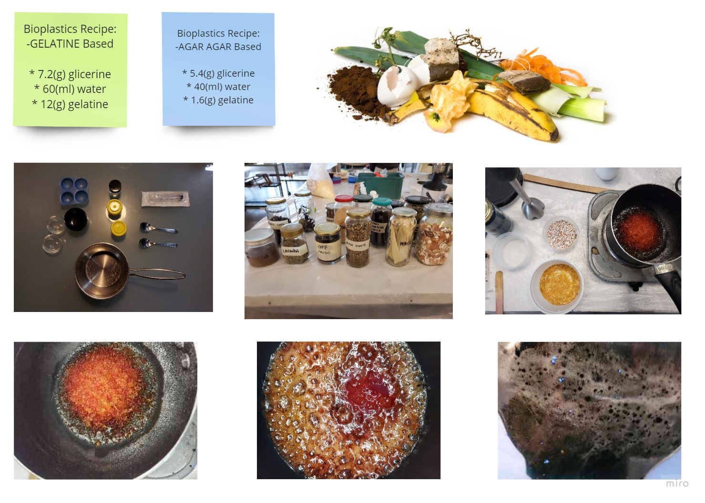

Intervention

The intention of an intervention is to intervene, as is obvious. Taking into account my interests and my struggle, I want to try to introduce the concept of energy and biomaterials into society. And as such to be able to introduce an idea into the system, but without entering into collaboration with the capitalist system, that is in education.
In this way I am going to work with Kai to make a bioplastic and explore its properties as an energy transmitter by creating music.
The Biothesizer
Link Miro's board
Link Miro's board
The main values we want to convey to the children are the alternatives of new materials that satisfy ecological expectations. As well as understanding how energy is transmitted in each material depending on its properties.
These are the steps we propose to follow in order to reach the expectations and the autonomy of the activity itself.
Production Process
To make this intervention we need: the arduino system, the box, and the recipe for the biomaterials and the biomaterials. So, as I am more focused on learning programming and Kai on biomaterials, we split the work. I will work on the electronics and Kai on the biomaterials.
Biomaterials part
Kai has a background in biomaterials, and she took part in a workshop by Lara Campos. So he is getting more information about them. And choosing the right recipe to make with the children.
As for me, in my final degree project I worked with Agar-based biomaterials. So I can understand the basics of the materials. Also, I have studied the basic properties of materials during my studies.
Finally, we will make a recipe for Agar-Agar and another for gelatine, as they are very simple, and the two have different properties so that they can sound different in the machine, which is what we are interested in.

Electronics part
In order to be able to transmit a sound through the force transmitted by the material, we have chosen to use a force sensor. Jeremy told me that this could also be done with a capacitor sensor, thus varying the resistance between two layers of aluminium, for example.
But as I have no experience and little time we decided to go for the pressure sensor, where we found this tutorial on the internet on how to program them.
To learn how to use the C++ language, Jaremy helped me to program it and showed me the arduino reference, so I could learn how to program it.
In the end, we used a pressure sensor that, depending on the pressure applied to it, sends a frequency to a piezoelectric that transmits a sound according to the frequency.
Box part
In order to make the box Emelio helped us creating it with the Rhino program, as we needed to cut it with the laser carver and neither of us control these programs.
Here you can see the first prototype but it was too small to put all the electronics. So, we scaled the initial model and cut it again.

We chose cardboard as the first material as it was more sustainable and if we had to change a lot with the design we wouldn't waste so much material. The round holes are made to position the material.
Assembly
In order to be able to make the assembly we decided to solder some wires on the leds, because they were not long enough. And we didn't want to tie everything too much so that we could change the material when we finished the intervention with the teachers.
Final Biothesizer
Finally, here are the final tools we will use to create the biomaterials and the final music box.
Video of the Intervention with the teachers.
After the intervention we realised the value of language. Depending on the age at which the activity is applied, the language should be much simpler or more technical, so that the children can absorb the knowledge.
We also talked about the importance of having all the cables stored inside the machine. As perhaps, the effectiveness of having the ingredients already packaged with the corresponding measurements.